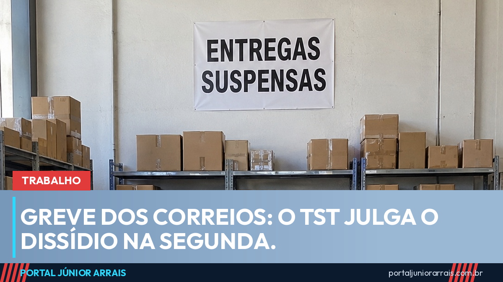

Greve dos Correios: TST julga o dissídio na segunda e o que muda para quem espera encomenda

A greve dos empregados dos Correios passou de uma semana sem acordo e vai ser decidida na Justiça. O Tribunal Superior do Trabalho marcou o julgamento do dissídio coletivo para a segunda-feira, 21 de setembro, às 13h30. Até lá a paralisação continua, e o atendimento segue funcionando parcialmente por determinação do próprio tribunal.
O que travou a negociação
São dois pontos principais. O primeiro é o plano de saúde: os trabalhadores contestam a mudança do papel da empresa no CorreiosSaúde, que deixaria de ser mantenedora para virar patrocinadora. Na prática, segundo a categoria, isso empurraria custo e mensalidade para cima de quem usa o plano.
O segundo é o reajuste salarial. A empresa ofereceu 0,87%. A categoria pede uma recomposição compatível com a inflação acumulada, mais ganho real. Entram na disputa ainda o adicional de 70% sobre férias, o pagamento de 200% pelo repouso e feriado trabalhado e a manutenção de gratificações. A negociação é conduzida pela Findect, a federação que representa os empregados.
O que o TST já decidiu
Antes do julgamento do mérito, o tribunal determinou a manutenção de 80% do efetivo em atividade em cada unidade. É a regra que vale para serviço considerado essencial: a greve é legítima, mas não pode parar o atendimento por completo. Por isso muitas agências continuaram abertas nesta semana, ainda que mais lentas.
Na segunda-feira o TST decide o conjunto: percentual de reajuste, destino do plano de saúde, benefícios em disputa e o tratamento dos dias parados. Decisão de dissídio vale para toda a categoria, independentemente de quem aderiu ou não à paralisação.
O que muda para quem espera encomenda
Com 80% do efetivo mantido, a entrega não parou, mas ficou mais lenta — e o acúmulo de uma semana não se resolve no dia seguinte ao fim da greve. Quem tem prazo correndo deve contar com atraso mesmo depois da decisão. Vale acompanhar o rastreamento pelo canal oficial e guardar o comprovante de postagem, que é o documento que sustenta qualquer reclamação depois.
Para quem aguarda documento com prazo legal — notificação, carnê, cartão de benefício, correspondência de processo —, o atraso na entrega não costuma ser aceito como desculpa automática pela outra ponta. Se o prazo for apertado, é melhor tratar disso antes do vencimento do que depois.
Cuidado com golpe
Greve de entrega é temporada alta para o golpe da falsa encomenda. A mensagem chega por SMS ou aplicativo dizendo que o pacote está retido, que houve "problema no endereço" ou que falta pagar uma pequena taxa de redespacho ou de liberação alfandegária, sempre com um link e um valor baixo, de poucos reais, para não levantar suspeita. Quem clica entrega dados do cartão, e a cobrança que aparece depois não é de poucos reais.
Se você não está esperando nada do exterior, não existe taxa a pagar. Confira o código de rastreamento apenas pelo aplicativo ou site oficial dos Correios, digitando o endereço você mesmo, e desconfie de qualquer cobrança recebida por link. Se o dinheiro já saiu, procure um profissional de sua confiança para avaliar o que dá para contestar junto ao banco e à operadora do cartão.
Conteúdo informativo — não substitui orientação individualizada sobre o seu caso.
Júnior Arrais · Editor do Portal Júnior Arrais
Comunicador de Ubá (MG). Escreve todos os dias sobre benefícios sociais, INSS, trabalho e economia do dia a dia, a partir do Diário Oficial, de portarias e de fontes oficiais, em linguagem simples. Conheça a linha editorial e a política de correções do portal.